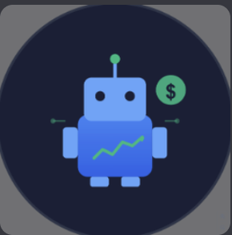

Event-Driven Market Analysis Platform

One of my projects that I am currently working on is an Event-Driven Market Analysis Platform built around a Discord bot. This project was originally just supposed to be developing a discord bot that helps beginner traders understand the stock market and trading, but as I learned more about quantitative finance I wanted to develop it into something more complex. So far the system aggregates financial data from multiple APIS, some including Finnhub, Marketaux, and Twitter. I currently store any user or data in general into a dual-database architecture using SQLite for local development and MongoDB Atlas on Google Cloud Platform for production. A switchable environment variable lets me toggle between the two without changing application code, which keeps the development workflow fast and flexible.
Some cool features that I included is a SHA-256-based deduplication to prevent duplicate event/news storage and a dedicated equity-news module for ticker-specific event tracking. I also plan to develop a NLP-based semantic novelty engine powered by the all-MiniLM-L6-v2 sentence-transformer model. The full project outline spans several different phases and concepts that I have yet to learn, and includes statistical rigor requirements such as bootstrap confidence intervals, Benjamini-Hochberg correction for multiple comparisons, and out-of-sample validation to prevent overfitting.
Credit Risk Scoring Model
Another project that I loved working on is a Credit Risk Scoring Model trained on over 32,000 loan records. I developed this project to learn more about classification ML algorithms, as well as AWS and Tableau. The project uses PostgreSQL hosted on AWS RDS with S3 integration for data storage, and features 13 SQL views built with window functions and common table expressions. On the modeling side, I trained and compared three classifiers — Logistic Regression, Random Forest, and XGBoost — achieving a best AUC-ROC of 0.90 and 73 percent recall on the positive class. I created around 5 Tableau dashboards for all my SQL analysis giving stakeholders an interactive way to explore default risk across different borrower segments.
Key Technical Skills
- Python (pandas, scikit-learn, XGBoost, PyTorch, NLP pipelines)
- SQL & database design (PostgreSQL, SQLite, MongoDB Atlas)
- Cloud platforms (AWS RDS/S3, GCP)
- Data visualization (Tableau, Altair, D3.js, Panel/HoloViz)
- Version control & deployment (Git, GitHub Pages, Docker)
- Financial data APIs (Finnhub, Yahoo Finance, Bloomberg Terminal)
What I'm Exploring Next
- Quantitative research techniques — Bayesian volatility modeling and high-frequency risk metrics
- NLP for finance — building a semantic novelty engine for market event deduplication
- Full-stack development — Bloomberg and Pershing integrations during my upcoming internship at Brean Capital